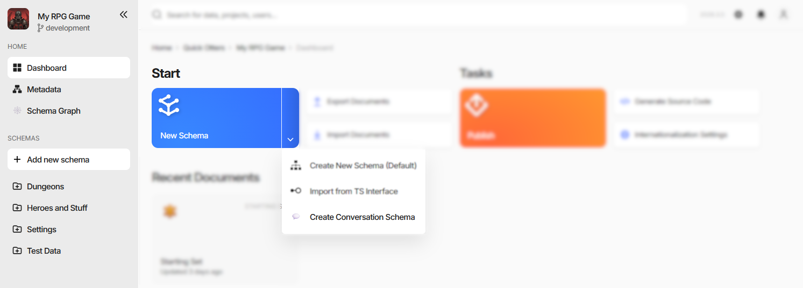
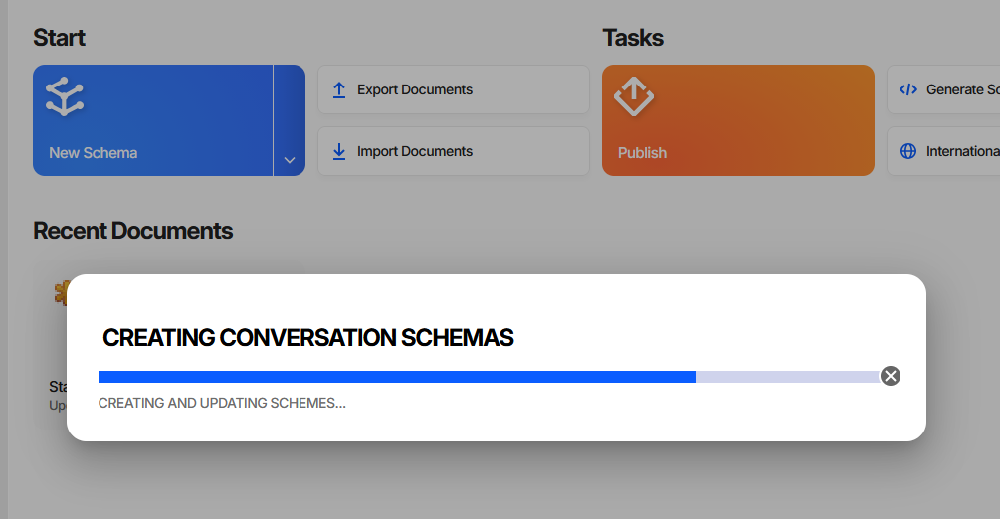

Custom Actions
A custom action is an entry an extension adds to one of Charon’s menus. Clicking it either calls a function the package exports, or navigates to a custom page the package declares.
Actions are how an extension does work that is not tied to editing one value: generating schemas, running a bulk change, exporting into a format of your own, opening a tool. The function receives a context object with the host’s services, so it can read and write game data, show dialogs and wizards, report progress, and navigate.
Declaring an Action
"config": {
"customActions": [
{
"name": "Create Conversation Schema",
"functionName": "createConversationSchema",
"location": "new-schema-menu",
"icon": "emoji/speech_balloon"
}
]
}
Field |
Meaning |
|---|---|
|
The menu entry’s text. Required. |
|
Which menu it goes in. Required, one of the four below. |
|
The function exported from the package entry point to call. Mutually exclusive with |
|
The id of a page in this same package’s |
|
Optional icon reference, |
|
Optional hover text. |
Exactly one of functionName and pageId must be set. Declaring both makes Charon use pageId and warn;
declaring neither leaves an entry that does nothing but log a warning when clicked.
The named function must be exported from the module Charon loads - the file main points at. Bundlers
tree-shake exports that nothing imports, so keep a reference to it; the example packages assign it to window
for exactly that reason.
export { createConversationSchema } from './schema.validation/migrate.schema.ts';
// keeps the bundler from dropping it
(window as any).createConversationSchema = createConversationSchema;
Where Actions Appear
|
Where it shows up |
|---|---|
|
The dropdown of the New Schema button on the project dashboard, below the built-in entries. |
|
The |
|
The |
|
A permanent entry in the left side navigation. |

Create Conversation Schema in the screenshot sits under New Schema next to Charon’s own Create New Schema (Default) and Import from TS Interface, and creates a schema already configured to use the package’s schema editor.
The Action Context
The function is called with one argument, whose shape follows the location it was declared for:
Context |
Extra fields beyond |
|---|---|
|
none |
|
|
|
|
|
none |
selection reports the grid’s current rows: selected holds the ids, changed emits the ids added and
removed by each change, and isAllSelected is true when the user chose select all for the whole filtered
collection. In that case treat the selection as “every document in the current view” - selected can be empty
while it is true, because the rows were never all loaded.
Every context carries services, and every field of it is optional. The host populates only what makes sense
where the action was triggered, so check before use:
export async function createConversationSchema(context: ExtensionActionContext) {
const progressRef = context.services.ui?.dialog?.showProgress({
title: 'Creating Conversation Schemas',
progressMode: 'determinate',
cancellable: true,
closedHandler: () => abortController.abort()
});
...
}
The services themselves - game data, dialogs, wizards, notifications, navigation, persisted UI state - are described in Host Services.
Reporting Progress
Anything that takes more than a moment should say so. services.ui.dialog.showProgress returns a handle with
update(percent, message), setFaulted(), and close(delayMs?):

With cancellable: true the dialog gets a close button, and closedHandler(cancelled) fires when the user
uses it - abort the work there rather than letting it run on invisibly. The pattern the examples follow is to
report success through the snack bar, and on failure to mark the dialog faulted and let it close itself a few
seconds later:
try {
await doTheWork(progressRef, abortController.signal);
context.services.ui?.snackBar?.saveSucceed();
progressRef?.close();
} catch (error) {
if (abortController.signal.aborted) { return; }
context.services.ui?.snackBar?.saveFailed(error);
progressRef?.setFaulted();
progressRef?.close(3000);
}